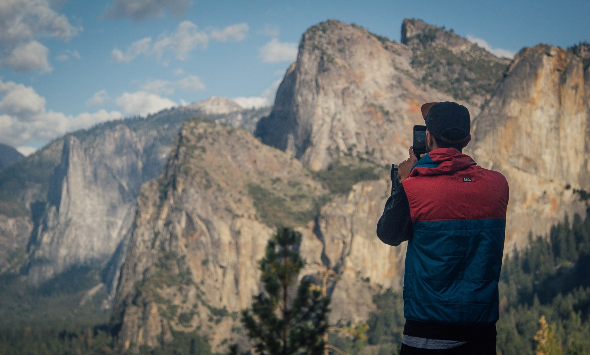

LA MONTAGNA È PIÙ BELLA, CONDIVISA.
Fuori c’è un mondo.
Trova la tua montagna.
Cime da raggiungere. Sentieri da scoprire.
La tua prossima avventura comincia qui.
La tua passione. Un orizzonte senza confini.
IL RICHIAMO DELLA MONTAGNA
Qual è la tua prossima meta?
Grandi classici e piccoli tesori. Scegli da dove partire.
Stiamo aprendo l’archivio…
↗ Un patrimonio da riscoprire: dati dell’archivio storico del 2015. Le foto raccontano il paesaggio alpino; nelle schede sono indicate come illustrative quando non riferite alla cima.
CAMBIA PROSPETTIVA
Ogni orizzonte, una nuova storia.
Dalle pareti di casa alle grandi vette.
Trova il tuo angolo di mondo.

Stessa passione. Nuovi punti di vista.LO SPIRITO DI SHARE YOUR MOUNTAIN
Le montagne ci uniscono.
Le storie ci portano lontano.
Un’idea semplice: riunire le informazioni su cime e itinerari, valorizzare le fonti e lasciare una traccia delle nostre avventure.
Questo nuovo capitolo riparte dal progetto originale. Un archivio aperto da esplorare, una lista personale per i tuoi sogni, e la stessa voglia di guardare più in alto.
Trova la tua prossima storia ↗Scopri le radici del progetto ↗